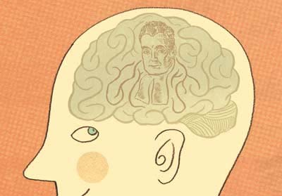
Machine Learning and Cognitive
Science
Josh Tenenbaum
MIT Department of Brain and Cognitive Sciences
CSAIL
MLSS 2009 – Cambridge, UK
Human learning and machine
learning: a long-term relationship
• Unsupervised learning
– Factor analysis
– Multidimensional scaling
– Mixture models (finite and infinite) for classification
– Spectral clustering
– Topic modeling by factorizing document-word count matrices
– “Collaborative filtering” with low-rank factorizations
– Nonlinear manifold learning with graph-based approximations
• Supervised learning
– Perceptrons
– Multi-layer perceptrons (“backpropagation”)
– Kernel-based classification
– Bayesian concept learning
• Reinforcement learning
– Temporal difference learning
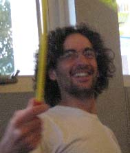
Tom Griffiths
Charles Kemp
Amy Perfors
Pat Shafto
Vikash Mansinghka
Dan Roy
Tomer Ullman
Steve Piantadosi
Chris Baker
Noah Goodman
The big question
How does the mind get so much out of so
little?
Our minds build rich models of the world and make strong
generalizations from input data that is sparse, noisy, and
ambiguous – in many ways far too limited to support the
inferences we make.
How do we do it?
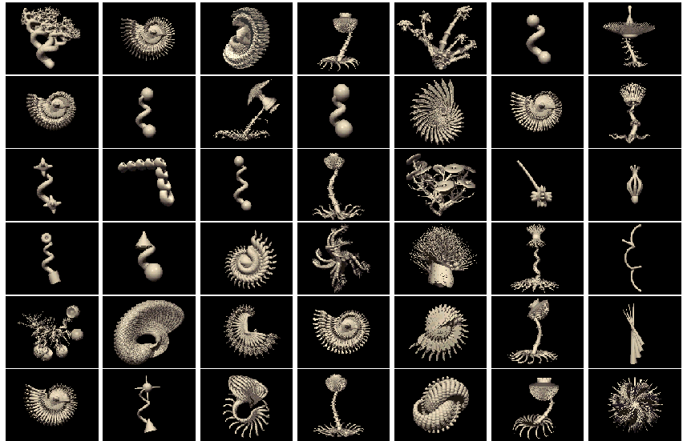
Learning words for objects
Learning words for objects
“tufa”
“tufa”
“tufa”
The big question
How does the mind get so much out of so
little?
– Perceiving the world from sense data
– Learning about kinds of objects and their properties
– Inferring causal relations
– Learning the meanings of words, phrases, and sentences
– Learning and using intuitive theories of physics,
psychology, biology, …
– Learning social structures, conventions, and rules
The goal: A general-purpose computational
framework for understanding how people make
these inferences, and how they can be successful.
The big question
How does the mind get so much out of so
little?
The “problem of induction”.
The answer: abstract knowledge.
(Constraints / Inductive bias / Priors)
The approach
1. How does abstract knowledge guide learning and inference
from sparse data?
P(d | h)P(h)
Bayesian inference in
P(h | d ) = ∑P(d |h )P(h )
probabilistic generative models.
i
i
h ∈H
i
2. What form does abstract knowledge take, across different
domains and tasks?
Probabilities defined over a range of structured representations:
spaces, graphs, grammars, predicate logic, schemas, programs.
3. How is abstract knowledge itself acquired – balancing complexity
versus fit, constraint versus flexibility?
Hierarchical models, with inference at multiple levels (“learning
to learn”). Nonparametric (“infinite”) models, growing
complexity and adapting their structure as the data require.
Outline for lectures
• Introduction
• Cognition as probabilistic inference
• Learning concepts from examples
• Learning and using intuitive theories (more
structured systems of knowledge)
Cognition as probabilistic inference
(circa 2007)
Visual perception [Weiss, Simoncelli, Adelson, Richards, Freeman, Feldman,
Kersten, Knill, Maloney, Olshausen, Jacobs, Pouget, ...]
Language acquisition and processing [Brent, de Marken, Niyogi, Klein,
Manning, Jurafsky, Keller, Levy, Hale, Johnson, Griffiths, Perfors, Tenenbaum, …]
Motor learning and motor control [Ghahramani, Jordan, Wolpert, Kording,
Kawato, Doya, Todorov, Shadmehr, …]
Associative learning [Dayan, Daw, Kakade, Courville, Touretzky, Kruschke, …]
Memory [Anderson, Schooler, Shiffrin, Steyvers, Griffiths, McClelland, …]
Attention [Mozer, Huber, Torralba, Oliva, Geisler, Yu, Itti, Baldi, …]
Categorization and concept learning [Anderson, Nosfosky, Rehder, Navarro,
Griffiths, Feldman, Tenenbaum, Rosseel, Goodman, Kemp, Mansinghka, …]
Reasoning [Chater, Oaksford, Sloman, McKenzie, Heit, Tenenbaum, Kemp, …]
Causal inference [Waldmann, Sloman, Steyvers, Griffiths, Tenenbaum, Yuille, …]
Decision making and theory of mind [Lee, Stankiewicz, Rao, Baker,
Goodman, Tenenbaum, …]
Modeling basic cognitive capacities as
intuitive Bayesian statistics
• Similarity (Tenenbaum & Griffiths, BBS 2001; Kemp & Tenenbaum,
Cog Sci 2005)
• Representativeness and evidential support (Tenenbaum &
Griffiths, Cog Sci 2001)
• Causal judgment (Steyvers et al., 2003; Griffiths & Tenenbaum,
Cog. Psych. 2005)
• Coincidences and causal discovery (Griffiths & Tenenbaum,
Cog Sci 2001; Cognition 2007; Psych. Review, in press)
• Diagnostic inference (Krynski & Tenenbaum, JEP: General
2007)
• Predicting the future (Griffiths & Tenenbaum, Psych. Science
2006)
Learning causation from contingencies
C present C absent
(c+)
(c-)
e.g., “Does injecting
E present (e+)
a
c
this chemical cause
mice to express a
E absent (e-)
b
d
certain gene?”
Does C cause E ?
(rate on a scale from 0 to 100)
Learning with graphical models
• Strength: how strong is the relationship?
B
C
w
w
0
1
E
• Structure: does a relationship exist?
B
C
B
C
vs.
h
h
1
0
E
E
Learning causal strength
(parameter learning)
Assume this causal structure and estimate strength w :
1
B
C
w0
w1
E
ΔP ≡ P( +
e | +
c ) − P( +
e | −
c )
Δ
≡
P
p
Causal Power
1 P( +
− e | −
c )
Both measures are maximum likelihood estimates of the strength
parameter w , under different parameterizations for P(E|B,C):
1
linear → ΔP, Noisy-OR → Causal Power
Learning causal structure
(Griffiths & Tenenbaum, 2005)
• Hypotheses:
h :
1
B
C
h :
0
B
C
w
w
0
w1
0
E
E
likelihood ratio
P(d | h )
• Bayesian causal support: log
1
(Bayes factor)
P(d | h )
0
gives evidence
1
in favor of h
P(d | h ) = ∫ P(d | w ) p(w | h ) dw
1
0
0
0
0
0
0
1
1
P(d | h ) = ∫ ∫ P(d | w ,w ) p(w ,w | h ) dw dw
1
0
1
0
1
1
0
0
0
1
noisy-OR
(assume uniform parameter priors, but see Yuille et al., Danks et al.)
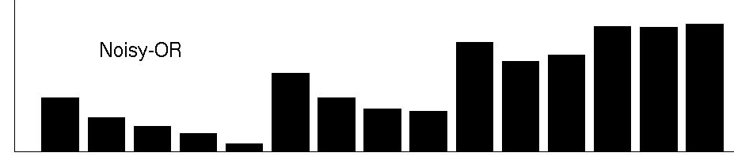
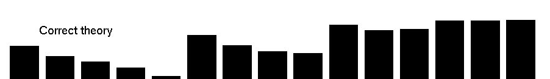
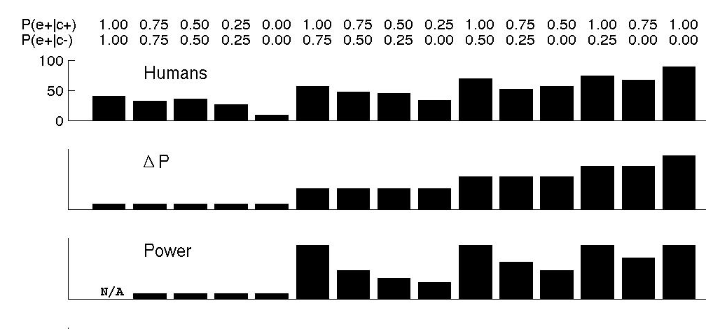
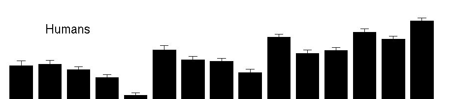
Comparison with human judgments
(Buehner & Cheng, 1997; 2003)
ΔP = 0
ΔP = 0.25
ΔP = 0.5
ΔP = 0.75ΔP = 1
People
Assume
B
C
ΔP
structure:
Estimate w
w
0
1
strength w
E
1
Causal Power
Bayesian structure learning
B
C
B
C
vs.
w
w
w
0
1
0
E
E
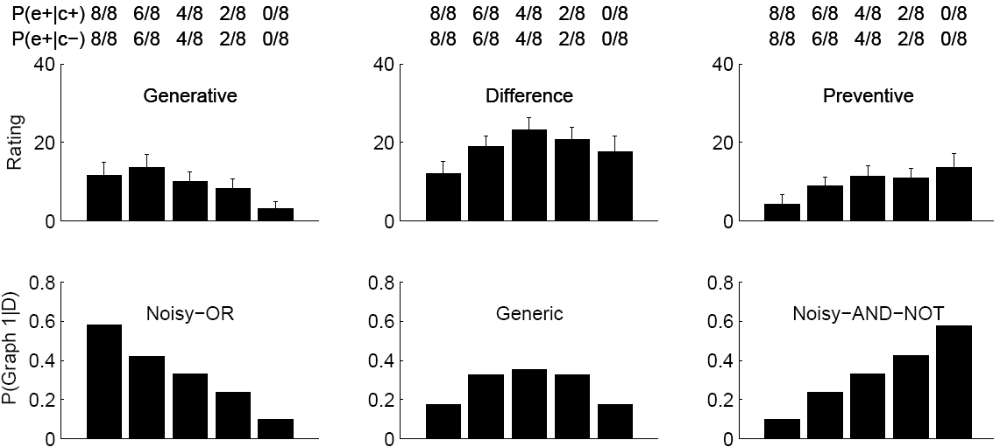
Inferences about causal structure depend on
the functional form of causal relations
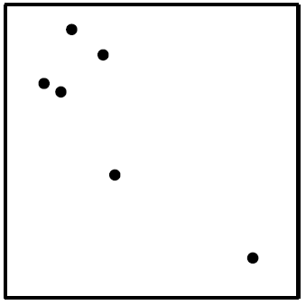
Causes and coincidences:
Mere randomness or a hidden cause?
(Griffiths & Tenenbaum, Cognition 2007; Psych. Review, in press)
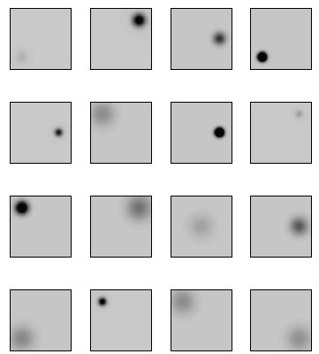
P(d | latent)
Bayesian measure of evidence: log P(d | random)
Random:
Latent common cause:
C
x
x
x
x
x
x
x
x
x
x
uniform
uniform
+
regularity
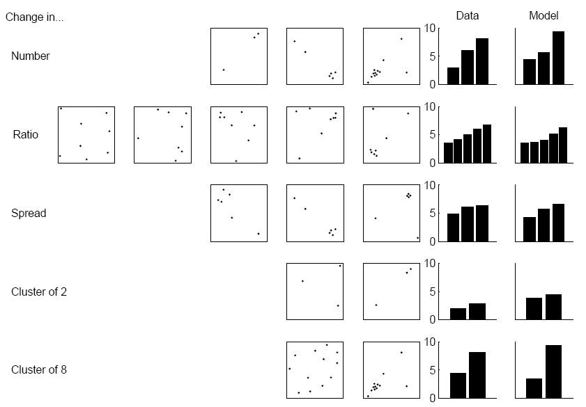
Cancer clusters?
Judging the probability of a hidden environmental cause
Everyday prediction problems
(Griffiths & Tenenbaum, Psych. Science 2006)
• You read about a movie that has made $60 million to date.
How much money will it make in total?
• You see that something has been baking in the oven for 34
minutes. How long until it’s ready?
• You meet someone who is 78 years old. How long will they
live?
• Your friend quotes to you from line 17 of his favorite poem.
How long is the poem?
• You meet a US congressman who has served for 11 years.
How long will he serve in total?
• You encounter a phenomenon or event with an unknown
extent or duration, t
, at a random time or value of t <t
.
total
total
What is the total extent or duration t
?
total
Bayesian analysis
p(t
|t) ∝ p(t|t
) p(t
)
total
total
total
∝ 1/t
p(t
)
total
total
Assume
random
sample
(for 0 < t < ttotal
else = 0)
Form of p(t
)?
total
e.g., uninformative (Jeffreys) prior ∝ 1/ttotal
Bayesian analysis
p(t
|t) ∝ p(t|t
) p(t
)
total
total
total
P(t
|t)
total
ttotal
t
Posterior median guess for t
:
total
t* such that P(t
> t*|t) = 0.5
total
Bayesian analysis
p(t
|t) ∝ p(t|t
) p(t
)
total
total
total
P(t
|t)
total
ttotal
t t*
Posterior median guess for t
:
total
t* such that P(t
> t*|t) = 0.5
total
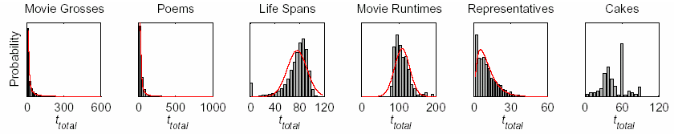
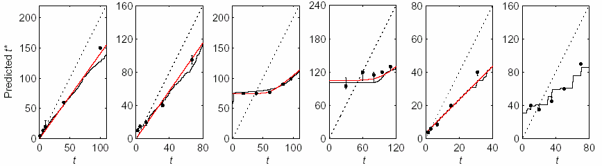
Priors P(t
) based on empirically measured durations or magnitudes
total
for many real-world events in each class:
Median human judgments of the total duration or magnitude t
of
total
events in each class, given one random observation at a duration or
magnitude t, versus Bayesian predictions (median of P(t
|t)).
total
Outline for lectures
• Introduction
• Cognition as probabilistic inference
• Learning concepts from examples
• Learning and using intuitive theories (more
structured systems of knowledge)

“tufa”
“tufa”
“tufa”
Learning from just one or a few examples, and mostly
unlabeled examples (“semi-supervised learning”).
Simple model of concept learning
“This is a blicket.”
“Can you show me the
other blickets?”
Simple model of concept learning
“This is a blicket.”
Other blickets.
Simple model of concept learning
“This is a blicket.”
Other blickets.
Learning from just one positive example is possible if:
– Assume concepts refer to clusters in the world.
– Observe enough unlabeled data to identify clear clusters.
(c.f. Learning with mixture models, Ghahramani & Jordan,
1994; Neal 2000)
Concept learning with mixture
models in cognitive science
• Fried & Holyoak (1984)
– Modeled unsupervised and
semi-supervised categorization
as EM in a Gaussian mixture.
• Anderson (1990)
– Modeled unsupervised and semi-supervised
categorization as greedy sequential search in an
Dirichlet Process mixture model.
A typical cognitive experiment
F1 F2 F3 F4 Label
Training stimuli: 1 1 1 1
1
1 0 1 0
1
0 1 0 1
1
0 0 0 0
0
0 1 0 0
0
1 0 1 1
0
Test stimuli: 0 1 1 1
?
1 1 0 1
?
1 1 1 0
?
1 0 0 0
?
0 0 1 0
?
0 0 0 1
?
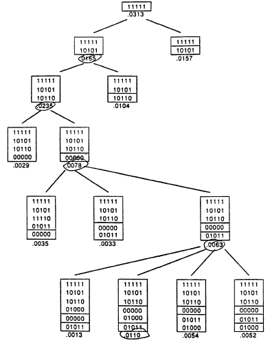
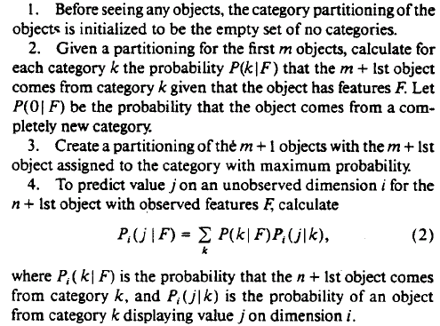
Anderson (1990), “Rational
model of categorization”:
Greedy sequential search
in an infinite mixture
model.
Sanborn, Griffiths, Navarro
(2006), “More rational
model of categorization”:
Particle filter with a
small # of particles

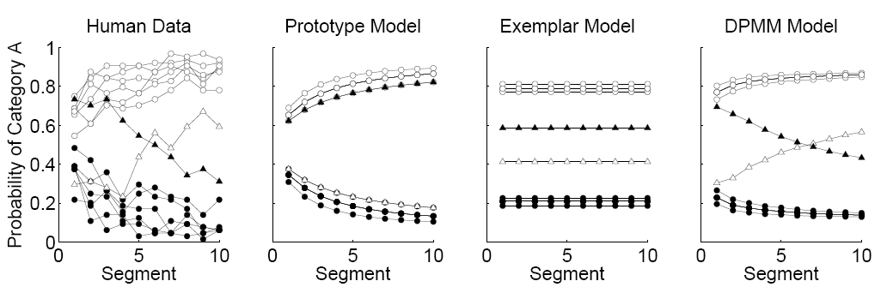
From simple to complex category
boundaries
Category
A
B
(Smith and Minda, 1998)
(Griffiths, Sanborn, Canini, Navarro, 2008)
Document Outline